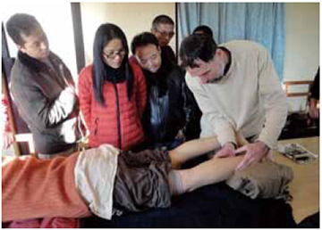

相关证明

Brown, Stephen
L.Ac.
Seattle Institute of Oriental Medicine certified instructor
我采用新的Pyonex
我在西雅图地区练习日式针灸和指压, 我一直在追寻我导师Shudo Denmei的脚步。同Dr. Shudo一样,我经常在练习中使用皮内针, 同时我按照我的方式使用按压针，以便加强我的治疗。 我很高兴当Dr. Shudo几年前把称为新的Pyonex按压针介绍给我。使用新的Pyonex将我的针灸到一个新的水平。相交于传统的按压针和新的Pyonex有许多优点针, 主要如下:
- 单独包装 (减少受污染的机会)(111111111111111111111)
- 较小尺寸针头 (较少刺激 ，较少不适/痛苦)
- 塑料针头 (容易看到哪一侧朝上)
- 小标签方便拿住胶带 (容易调整针放位置)
让我解释一下哪些特性是使新的Pyonex 成为按压针的最佳选择。
- 我使用过许多品种的按压针, 有些是一包五个或十个。我经常不得不扔掉不到一半使用的开封包。 因为我会把它们放在某个地方, 打开一个新的包, 一旦包开了, 我就无法确定针头是否无菌。 这就是为什么使用独立包装的Pyonex更有意义。
- 新的Pyonex对我来说最重要的特点是多彩包装和非常细小的针头可用。 传统的按压针的长度通常是2到3mm。新的Pyonex 从0.3mm 开始 (橙色) 上升到 1.5mm (粉红色)。皮肤的平均厚度是在1和2mm 之间, 如果使用较短的新 Pyonex (1mm)，皮肤不会被刺穿。这不仅使新的Pyonex 成为市场上最安全的按压针, 同时也是侵入性最少和最舒适的。较短的新Pyonex的可以实际应用在任何地方。 这包括像敏感的耳朵和面部穴位。这为需要更多刺激但又不能一次性完成的病人开辟了新的治疗方案, 例如儿童。
- 第三个特点, 小塑料 "突起" 在中间的粘合剂补丁, 看起来像一个有趣的优势。 我之所以喜欢它, 是因为有些时候, 我很难找到我针头。塑料针头使针更明显和可触摸。 你可以突出的区域找到它, 这是非常方便病人, 当他们决定在床上或在黑暗中进行治疗。我对制造商有个要求 。我想有这些塑料针头与包装的色彩包装方式相同。 这样, 我就可以知道我使用了哪种尺寸, 而不必再引用我的图表 (如果我写下来的话)。
- The last feature of 新的Pyonex that I really appreciate is the small tab for holding the adhesive tape while you apply it. When you take 新的Pyonex out of its package, it can be pulled off so that the backing on the tape remains just where you are holding it. I often apply the 新的Pyonex on the selected point and check to see if this actually works to relieve the pain. If it doesn’t, it’s a simple matter to remove and find the location that works better. This feature makes it easy to reapply 新的Pyonex for the best results. 新Pyonex的最后一个特性, 我真的很喜欢撕开胶带时拿住的小标签. 当你把新的Pyonex撕下, 小标签可以被拉下来, 以便在磁带上的支持仍然只是 你拿着它的地方。我经常在选定的点上应用新的Pyonex, 并检查它是否真的有效 来减轻疼痛如果没有, 它是一个简单的问题, 以删除和找到的位置, 更好地工作。这 功能使得重新应用新的Pyonex 以取得最佳效果是很容易的。
How I use 新的Pyonex
I primarily practice Meridian Therapy, and this
style emphasizes tonification and dispersion. Originally when I started using intradermals and press tacks, I reasoned
that these needles acted to disperse or move energy because they are like tiny metal splinters in the body. So I used
to apply intradermals and press tacks exclusively on excess (hard or tender) points. With 新的Pyonex, however, the
needles can be so short and non-invasive that I now believe they can also act to tonify or build energy. So excess
points or areas related to pain are just the tip of the iceberg. Deficient or weak points can serve to alleviate pain
and symptoms just as well as if not better than excess points.
Now I select among the shorter and longer 新的Pyonex
to leverage and maintain a positive change. Using both ends of the spectrum increases our treatment options and improves
clinical outcomes. Also I use different 新的Pyonex sizes on different places as follows: The ears and face (orange),
hands and feet (orange & yellow), lower arms and legs (yellow & green), upper arm and legs and torso (green
& blue)
我主要是练习中医的经络疗法，这种方式强调的是滋养补气和驱散寒气，最初当我开始使用皮下按压针时，由于它们就像是一些身体里细小的金属尖片，我推测这些针头有驱散寒气和活络血脉的作用。
所以，我曾经经常使用皮下按压针专门地去作用于多余的（轻或重的）穴位。然而，对于新的Pyonex来说，它的针头上可以说上非常短小以及不会真正地侵入身体内部。以至于现在我开始相信它们的确有滋养补益和
活络经血起到作用。因此，excess points或和疼痛有关的区域仅仅只是冰山一角。缺陷或薄弱的穴位能治疗缓解疼痛的症状虽然比不上excess points，但至少是一样有效。现在我在较短或较长中选择新的Pyonex
去支撑和维持一个积极向上的改变，使用针头范围的两头来增加我们的治疗方案和改善临床结果。我同样也会在不同的部位使用不同尺寸大小的新的Pyonex，例如：手和脚（橙色和黄色），下手臂和腿（黄色和绿色），
上臂和腿部和躯干（绿色和蓝色）
Applications for general tonification and balancing:
Place on a pair of points like SP-6, ST-36, LI-4, LR-3, KI-3 or 6, PC-6, TB-4 or 5, etc.
Applications on meridians in relation to pain:
- Place on tight or tender points on affected meridians that did not change enough with treatment. 放置在受影响的经络上用紧或松的穴位以至于治疗改变不大。
- Place on the point on the opposite side of the body from the above point, or on a depressed point on that meridian on opposite side. 放置在与上穴位身体相对的穴位上，或者放置在一个与经络边相对的分散穴位上。
- Place on the mother or child point of the meridians associated with pain. 放置在与疼痛相关的经络的母穴位或子穴位上
- Place on connecting points of Yin-Yang paired meridian on same side, or the Three Yin Three Yang paired meridian on the other side (e.g. right Large Intestine meridian → left Stomach meridian) 放置在与阴阳配对的同侧经络或者在三对阴阳配对的同侧经络上的相连接的穴位。
- Place on auricular points related to painful area on the same side. 放置在与同侧疼痛区相关的耳穴。
While the direct method of applying 新的Pyonex on the most tight or tender point in the painful area can be effective,
I do this mostly for the psychological effect of treating the painful area. The more intelligent approach is to palpate
along meridians and distal points related to the complaint and to treat the most effective points that alleviate the
pain.
新的Pyonex has made the use of press tacks easy and safe and thus has expanded the range of possibilities
for press tack applications. The possible downside is that too many could be used at one time and they might cancel
each other out. More is definitely not better. I recommend trying 新的Pyonex on just a few points and confirming the
effect. Remember to remind your patients to remove them after three days or sooner if there is any discomfort.